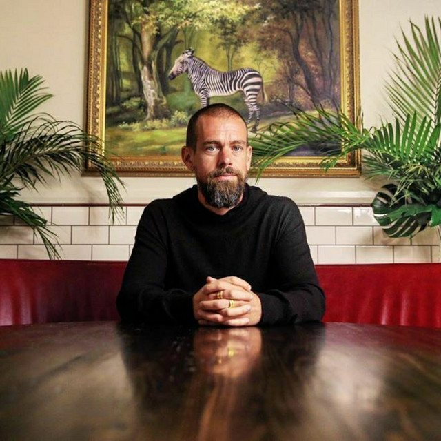

The Eclectic Polymath Podcast · Archive
#118 Satya Nadella: Microsoft, AI, and the Reinvention of a Tech Giant
About this episode
Satya Nadella didn’t create Microsoft. He inherited a giant that needed to become something new.
This episode traces his journey from Hyderabad, India, to the top of one of the most important technology companies in the world. It looks at how his systems thinking, leadership style, and “growth mindset” philosophy helped move Microsoft away from Windows-first thinking and toward cloud computing, open source, and Azure.
We also get into Microsoft’s aggressive push into generative AI, its partnership with OpenAI, the cultural changes Nadella brought inside the company, and the challenges that come with running a technology empire at this scale. This is a story about reinvention, institutional leadership, and what it takes to give an aging giant a second foundation.
Key points
- This episode traces his journey from Hyderabad, India, to the top of one of the most important technology companies in the world.
- It looks at how his systems thinking, leadership style, and “growth mindset” philosophy helped move Microsoft away from Windows-first thinking and toward cloud computing, open source, and Azure.
- We also get into Microsoft’s aggressive push into generative AI, its partnership with OpenAI, the cultural changes Nadella brought inside the company, and the challenges that come with running a technology empire at this scale.
More like this
 #126 Josh Kushner: Thrive Capital, OpenAI, and the Quiet Architecture of PowerAugust 14, 202648:57
#126 Josh Kushner: Thrive Capital, OpenAI, and the Quiet Architecture of PowerAugust 14, 202648:57
#114 Jack Dorsey: Twitter, Bitcoin, and the Architecture of FlowAugust 9, 202654:12#112 Sundar Pichai: The Institutional Engineer Behind GoogleAugust 8, 202655:51#090 NVIDIA: Jensen Huang, AI Infrastructure, and the Thirty-Year BetJuly 9, 202651:45